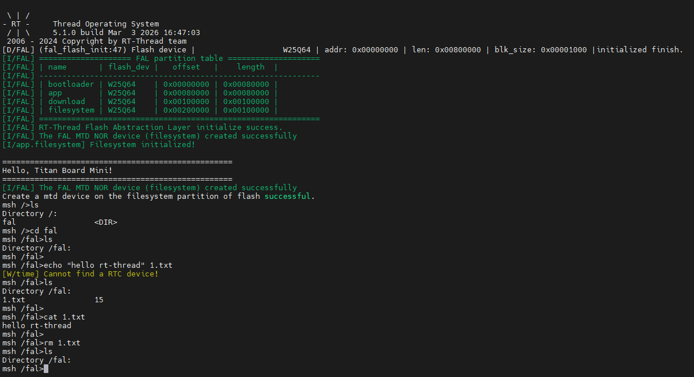

QSPI Flash File System Example Guide
中文 | English
Introduction
This example demonstrates how to implement a LittleFS file system using the onboard QSPI Flash (W25Q64) on the Titan Board Mini, managed through RT-Thread’s FAL (Flash Abstraction Layer) for Flash device management.
Key features include:
Use QSPI interface to drive W25Q64 Flash (8MB capacity)
Manage Flash devices and partitions through FAL abstraction layer
Mount LittleFS file system to Flash partition
Provide standard file I/O operation interfaces
Support file system read/write, create, delete and other operations
Hardware Introduction
1. W25Q64 QSPI Flash
Titan Board Mini has an onboard W25Q64 QSPI Flash chip:
Parameter |
Description |
|---|---|
Model |
W25Q64 |
Capacity |
8MB (64Mbit) |
Interface |
QSPI (Quad SPI) |
Voltage |
2.7V - 3.6V |
Sector Size |
4KB |
Block Size |
64KB |
Page Size |
256B |
Clock Frequency |
Up to 133MHz (QSPI mode) |
2. QSPI Interface Features
QSPI (Quad Serial Peripheral Interface) is a high-speed serial interface:
4-bit Data Bus: 4x data throughput compared to standard SPI
High-speed Transfer: Supports clock frequencies up to 133MHz
Low Pin Count: Only 6 signal lines required (CLK, CS, D0-D3)
Hardware Acceleration: RA8P1 integrates OSPI_B module, supports DMA transfer
Flash Partition Plan
This example divides the W25Q64 Flash into 4 partitions:
Partition Name |
Start Address |
Size |
Purpose |
|---|---|---|---|
bootloader |
0x000000 |
512KB |
Bootloader program |
app |
0x80000 |
512KB |
Application firmware |
download |
0x100000 |
1MB |
Download cache area |
filesystem |
0x200000 |
1MB |
LittleFS file system |
Flash Partition Layout:
W25Q64 (8MB)
├────────────────┬────────────────┬────────────────┬────────────────┬─────────────
│ Bootloader │ App │ Download │ Filesystem │ Reserved
│ 512KB │ 512KB │ 1MB │ 1MB │ 4MB
└────────────────┴────────────────┴────────────────┴────────────────┴─────────────
0x000000 0x080000 0x100000 0x200000 0x300000
Software Architecture
1. Layered Design
The file system adopts a layered architecture design:
Application Layer (user code)
↓
DFS (Device File System) - RT-Thread file system abstraction layer
↓
LittleFS - Lightweight embedded file system
↓
FAL (Flash Abstraction Layer) - Flash abstraction layer
↓
MTD (Memory Technology Device) - Memory device driver
↓
W25Q64 QSPI Driver - Hardware driver layer
↓
QSPI/OSPI_B hardware interface
2. Core Components
FAL (Flash Abstraction Layer)
FAL provides unified management interfaces for Flash devices and partitions:
Flash Device Table: Define Flash devices in the system
Partition Table: Define Flash partition layout
Abstract Interface: Provide unified read/write/erase operations
FAL Configuration (fal_cfg.h):
/* Flash device table */
#define FAL_FLASH_DEV_TABLE \
{ \
&w25q64, \
}
/* Partition table */
#define FAL_PART_TABLE \
{ \
{FAL_PART_MAGIC_WORD, "bootloader", "W25Q64", 0, 512 * 1024, 0}, \
{FAL_PART_MAGIC_WORD, "app", "W25Q64", 512 * 1024, 512 * 1024, 0}, \
{FAL_PART_MAGIC_WORD, "download", "W25Q64", (512 + 512) * 1024, 1024 * 1024, 0}, \
{FAL_PART_MAGIC_WORD, "filesystem", "W25Q64", (512 + 512 + 1024) * 1024, 1024 * 1024, 0}, \
}
LittleFS File System
LittleFS is a file system designed specifically for embedded systems:
Power-safe: Uses Copy-on-Write mechanism to ensure data integrity
Wear Leveling: Automatically performs Flash wear leveling to extend Flash life
Low Memory Footprint: Small RAM usage, suitable for resource-constrained systems
Dynamic Size: File system size can be adjusted as needed
W25Q64 QSPI Driver
W25Q64 driver provides Flash hardware operation interfaces:
Read Operation: Supports fast read (Quad Read)
Write Operation: Page programming (256B/page)
Erase Operation: Supports 4KB sector erase and 64KB block erase
Status Query: Query Flash busy status and write enable status
3. Project Structure
Titan_Mini_component_flash_fs/
├── src/
│ └── hal_entry.c # Main program entry
├── libraries/
│ └── Common/ports/
│ ├── fal_cfg.h # FAL configuration
│ └── w25q64/
│ ├── drv_w25q64.c # W25Q64 driver
│ └── ospi_b_commands.c # QSPI commands
└── packages/
└── littlefs-v2.5.0/ # LittleFS file system
├── lfs.c # LittleFS core
├── lfs_util.c # Utility functions
└── dfs_lfs.c # DFS adapter layer
Usage Examples
1. Initialization Flow
The main program (src/hal_entry.c) implements a complete file system initialization flow:
#define FS_PARTITION_NAME "filesystem"
void hal_entry(void)
{
rt_kprintf("\n==================================================\n");
rt_kprintf("Hello, Titan Board Mini!\n");
rt_kprintf("==================================================\n");
// 1. Initialize FAL (Flash abstraction layer)
extern int fal_init(void);
fal_init();
// 2. Create MTD device
extern struct rt_device* fal_mtd_nor_device_create(const char *parition_name);
struct rt_device *mtd_dev = fal_mtd_nor_device_create(FS_PARTITION_NAME);
if (mtd_dev == NULL)
{
rt_kprintf("Can't create a mtd device on '%s' partition.\n", FS_PARTITION_NAME);
}
else
{
rt_kprintf("Create a mtd device on the %s partition of flash successful.\n", FS_PARTITION_NAME);
}
// Main loop - LED blinking
while (1)
{
rt_pin_write(LED_PIN_R, PIN_HIGH);
rt_thread_mdelay(500);
rt_pin_write(LED_PIN_R, PIN_LOW);
rt_thread_mdelay(500);
}
}
2. File Operation Examples
After the file system is initialized, standard POSIX file I/O interfaces can be used:
#include <dfs_file.h>
/* Write file example */
void write_file_example(void)
{
FILE *fp = fopen("/filesystem/test.txt", "w");
if (fp != NULL)
{
fprintf(fp, "Hello, Titan Board!\n");
fprintf(fp, "This is a test file.\n");
fclose(fp);
rt_kprintf("File written successfully.\n");
}
}
/* Read file example */
void read_file_example(void)
{
char buffer[128];
FILE *fp = fopen("/filesystem/test.txt", "r");
if (fp != NULL)
{
while (fgets(buffer, sizeof(buffer), fp) != NULL)
{
rt_kprintf("%s", buffer);
}
fclose(fp);
}
}
/* List files example */
void list_files_example(void)
{
DIR *dir = opendir("/filesystem");
if (dir != NULL)
{
struct dirent *entry;
while ((entry = readdir(dir)) != NULL)
{
rt_kprintf("File: %s\n", entry->d_name);
}
closedir(dir);
}
}
Running Results
1. Terminal Output
After resetting Titan Board Mini, the terminal will output the following information:

2. File System Testing
The file system can be tested in the msh command line:
msh >ls /filesystem
test.txt
config.ini
msh >cat /filesystem/test.txt
Hello, Titan Board!
This is a test file.
msh >
Notes
1. Flash Usage Limitations
Erase Cycles: W25Q64 sector erase cycles are approximately 100,000 times
Data Retention: Data retention time at room temperature is about 20 years
Erase Before Write: Flash must be erased before writing
Alignment Requirements: Write and erase operations need to be aligned to sectors/pages
2. File System Recommendations
Small File Optimization: LittleFS is suitable for frequent small file read/write operations
Power Protection: Use LittleFS’s power-safe features
Regular Backup: Important data should be backed up to other storage media
Capacity Planning: Reserve some space for wear leveling
3. Performance Optimization
DMA Transfer: Use DMA to improve QSPI transfer efficiency
Cache Optimization: Configure file system cache size appropriately
Batch Operations: Try to read/write in batches to reduce operation count
Error Handling: Add appropriate error handling and retry mechanisms
Extended Applications
Based on this example, the following applications can be extended:
Configuration Storage: Store system configuration parameters
Logging System: Implement circular logging
OTA Upgrade: Store new firmware for OTA upgrade
Data Cache: Cache sensor data
Resource Storage: Store images, audio, fonts and other resource files
Offline Data: Store offline database
Firmware Backup: Backup multiple firmware for A/B upgrade